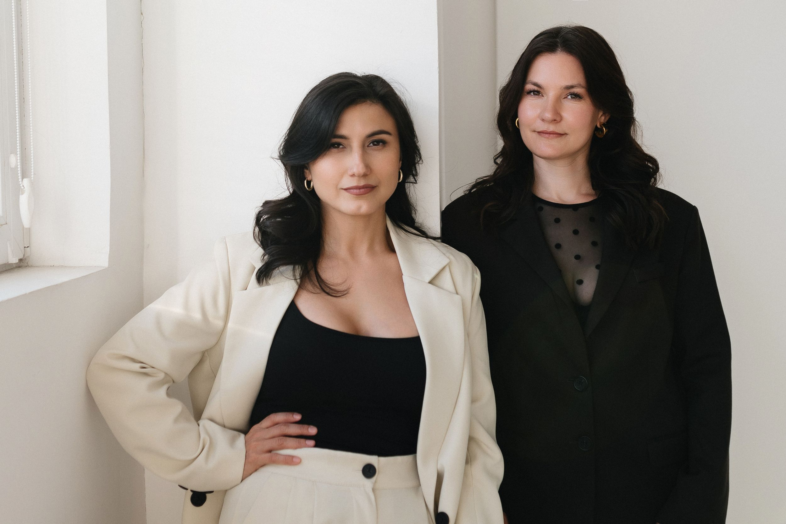

Форматы работы
Аудит и развитие
Найти ограничения роста или собрать команду и систему продаж — подберём формат под задачи вашего производства
Подобрать формат работыОт диагностики
до внедрения изменений
Как выбрать
Что сейчас важнее
для вашего бизнеса?
| Вопрос | Аудит продаж | Построение и развитие |
|---|---|---|
| Точка старта | Проблемы видны, причины не ясны | Нужны согласованные изменения |
| Главный фокус | Диагностика и приоритеты | Проектирование и внедрение |
| Работа с командой | Интервью и разбор текущей практики | Совместная настройка и освоение правил |
| На выходе | Выводы и план следующих шагов | Согласованная система работы отдела |
Не каждому бизнесу
нужен одинаковый маршрут
Аудит может быть самостоятельной работой. А если задача и исходные данные уже понятны, обсуждаем внедрение без отдельной диагностики.
На первой встрече уточним контекст, ожидаемый результат и участие команды. Затем зафиксируем состав работ, этапы и условия.